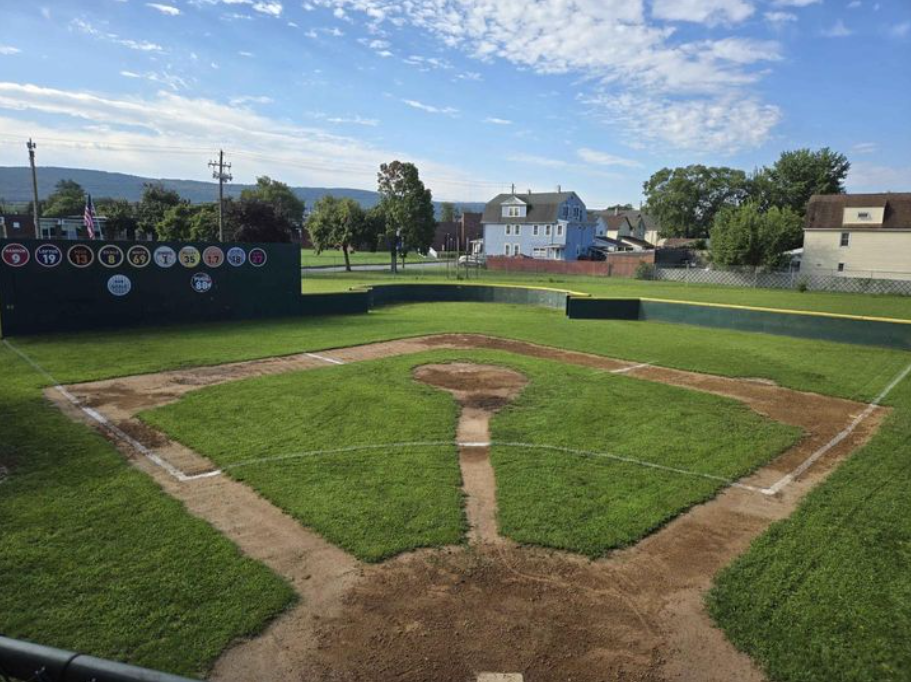

Diamond City Park
Diamond City Park (or DCP, as we affectionately nickname it) began construction on Monday, August 20, 2012, and was officially opened on Saturday, September 29, 2012.
DCP, which began as a dream in the minds of the Sickle boys back in 1989, is a blend of several notable classic Major League fields, including Fenway Park, the Polo Grounds, and Ebbets Field, to name a few. The wall in left is reminiscent of Boston's famed Green Monster, the curve in center field is Kevin Sickle's adaptation of the extension at the Polo Grounds, and the outfield angles are taken from Ebbets Field, among others.

Click here for the complete construction story